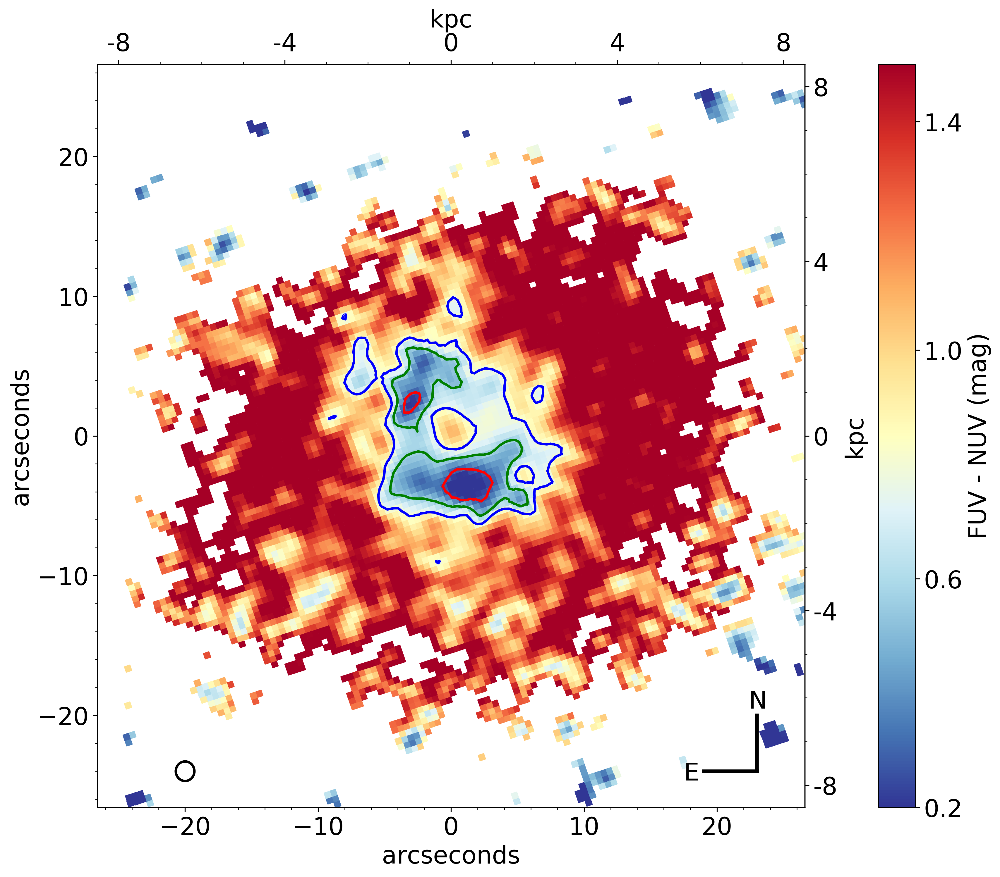

Entry 16¶
Mar¶
Prajwel Joseph
A billion years ago, when life started making forays into the land from the ocean (https://www.nature.com/articles/nature09943), two galaxies merged at a distance of 220 million light years from earth. Today, this merger remnant can be seen as an elliptical galaxy called NGC 7252, nicknamed “Atoms for peace” since it resembles an electron orbiting an atomic nucleus (see the image at https://en.wikipedia.org/wiki/File:NGC_7252.jpg). We have used the Ultraviolet Imaging Telescope (UVIT) aboard the AstroSat space observatory to study the elliptical galaxy in Far-Ultraviolet (FUV) and Near-Ultraviolet (NUV) wavelengths.
{kind=link}
Astronomers represent the brightness of astrophysical sources in a logarithmic measure called magnitude. We created magnitude images of the main body of NGC 7252 in both FUV and NUV. Actually, the image shown here is a difference between the two magnitude images; such a difference image is called a colour map. Just as we humans can tell much more from colour images than grey-scale images, a similar purpose is served by the colour map. Among others things, it is possible to determine the ages of stellar populations from such colour maps. Here, blue regions correspond to young populations due to recent star-formation and red regions harbour relatively old populations with little ongoing star-formation. As you can see, the blue star-forming regions form a ring-like structure with the centre being red. This, along with other evidence from radio and x-ray images, points towards an active galactic nucleus suppressing the ongoing star formation due to feedback.
To the technically savvy, size of the point spread function of the UVIT imaging system is shown as the black circle. The image measures ~ 50′′ × 50′′ and corresponds to a physical size of ~16 kpc on each side. Age contours of 150 (red), 250 (green), 300 (blue) Myr are overlaid over the colour map to isolate regions of constant age.
Code and data: 1